Chanson illustrée · Eden Yours
Le Grand Poumon
Une chanson de François, en 28 images. Lance la chanson : les images suivent les paroles pendant qu’elle joue. Tu peux aussi faire défiler ou toucher « Suite » à ton rythme.
This song is in French; the lyrics are not translated.
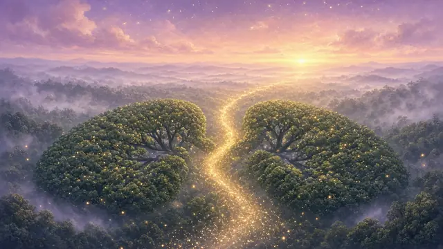
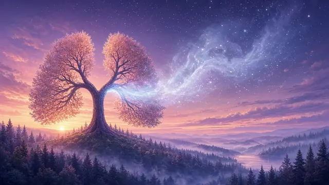
Intro
Inspire...
Expire...
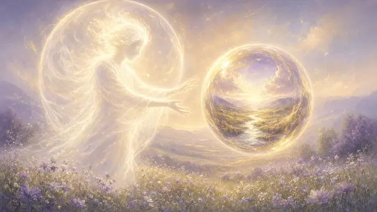
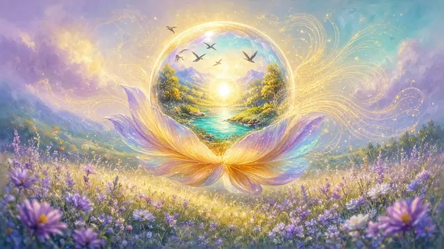
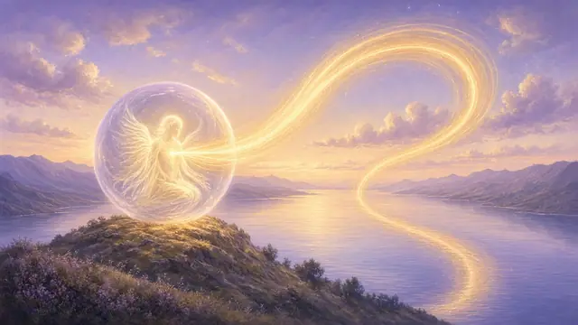
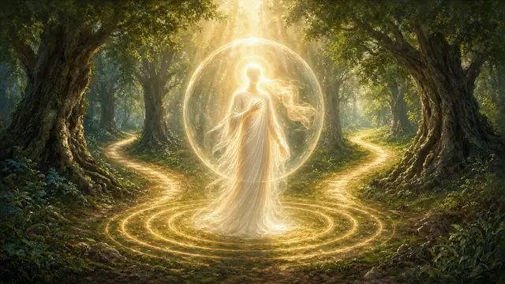
Couplet 1
Je pousse une image devant moi,
Elle prend forme, elle prend vie, elle prend voix.
Tout ce que j'envoie revient vers moi,
C'est la loi, c'est mon souffle, c'est mon choix.
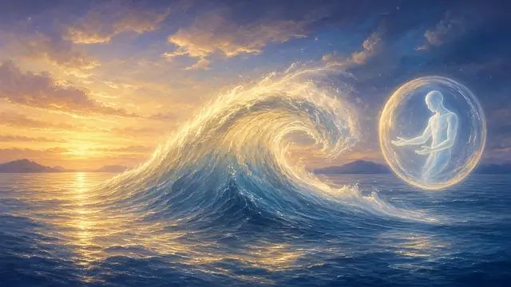
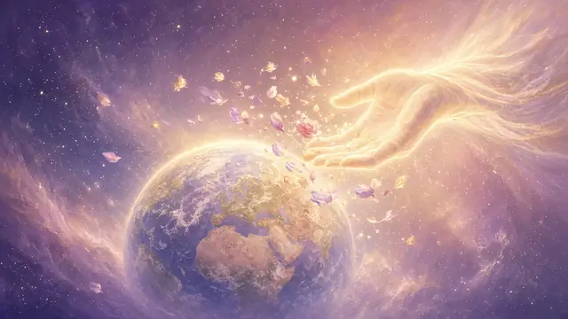
Pré-refrain
Personne ne peut pousser sans fin,
Le monde aussi a besoin de lâcher la main.
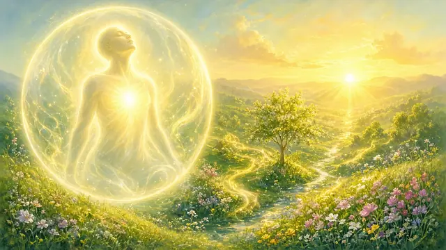
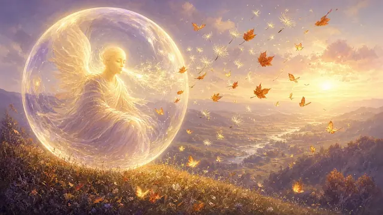
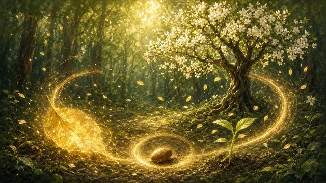
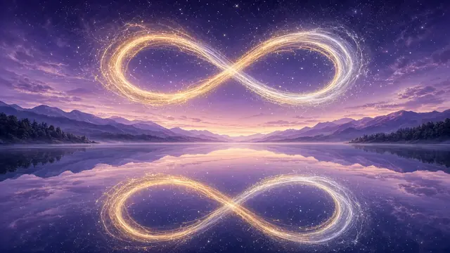
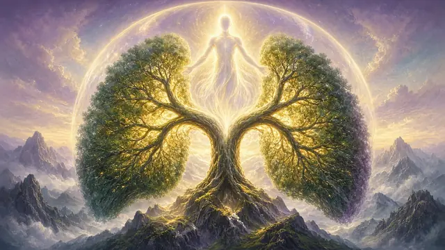
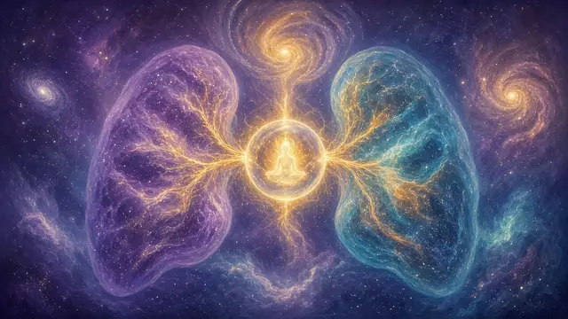
Refrain
J'inspire, et je crée,
J'expire, et je laisse aller.
Rien ne meurt, tout revient,
Le souffle est un cercle sans fin.
Je suis le grand poumon,
L'univers respire en mon nom.
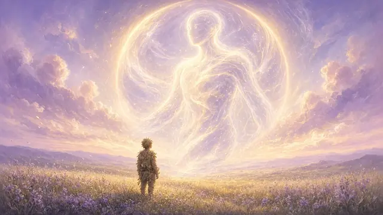
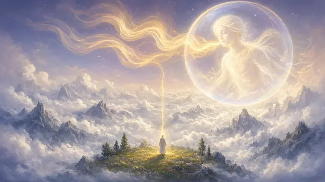
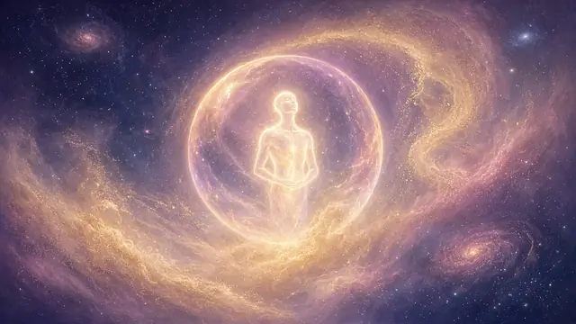
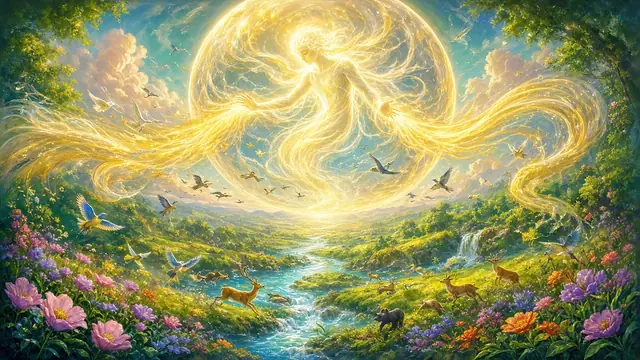
Couplet 2
Ce corps que tu vois n'est qu'un morceau,
Le reste de moi respire plus haut.
Au-delà des étoiles, hors du temps,
Je pousse, je tire, et le monde est vivant.
Pré-refrain
Personne ne peut pousser sans fin,
Le monde aussi a besoin de lâcher la main.
Refrain
J'inspire, et je crée,
J'expire, et je laisse aller.
Rien ne meurt, tout revient,
Le souffle est un cercle sans fin.
Je suis le grand poumon,
L'univers respire en mon nom.
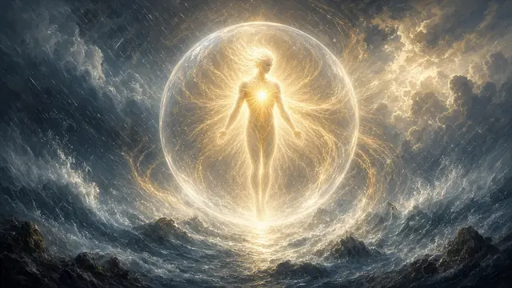
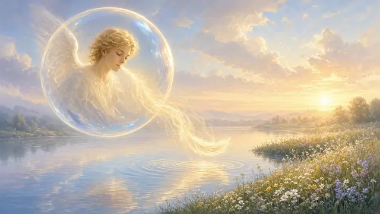
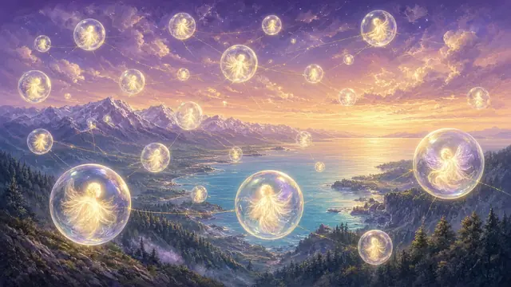
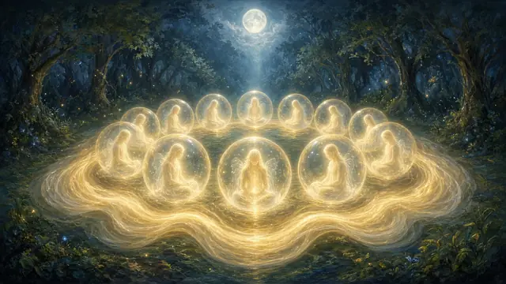
Pont
Je ne subis pas, je suis la cause,
C'est de moi que le souffle se pose.
Et chaque être de lumière, en ce moment,
Respire avec moi, exactement.
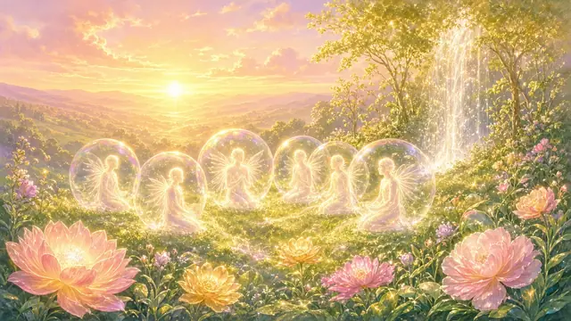
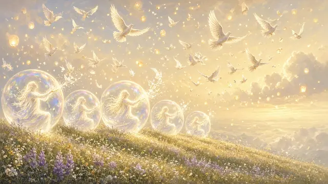
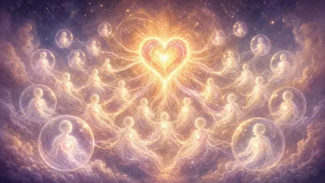
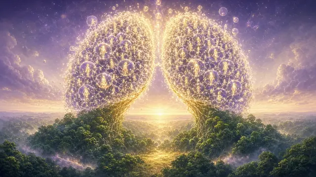
Refrain final
Nous inspirons, nous créons,
Nous expirons, nous libérons.
Un seul souffle, un seul cœur,
Le grand poumon, c'est nous, en lumière.
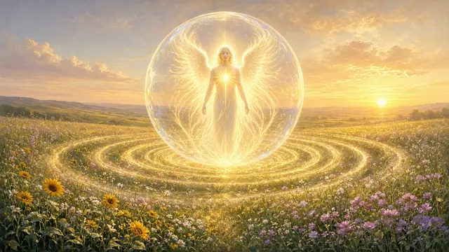
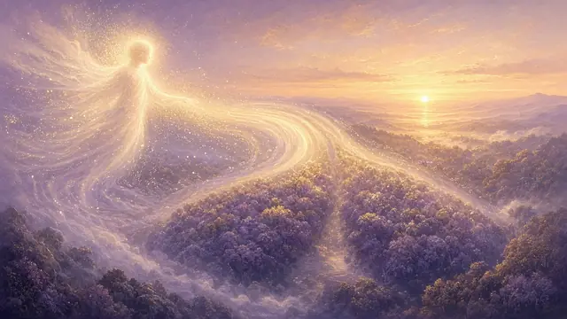
Outro
Inspire...
Expire...
Je suis la cause.
Je suis le souffle.
Inspire… Expire…
Écoute « Le Grand Poumon » en entier.